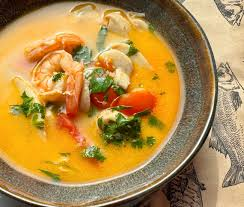
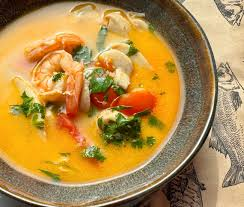
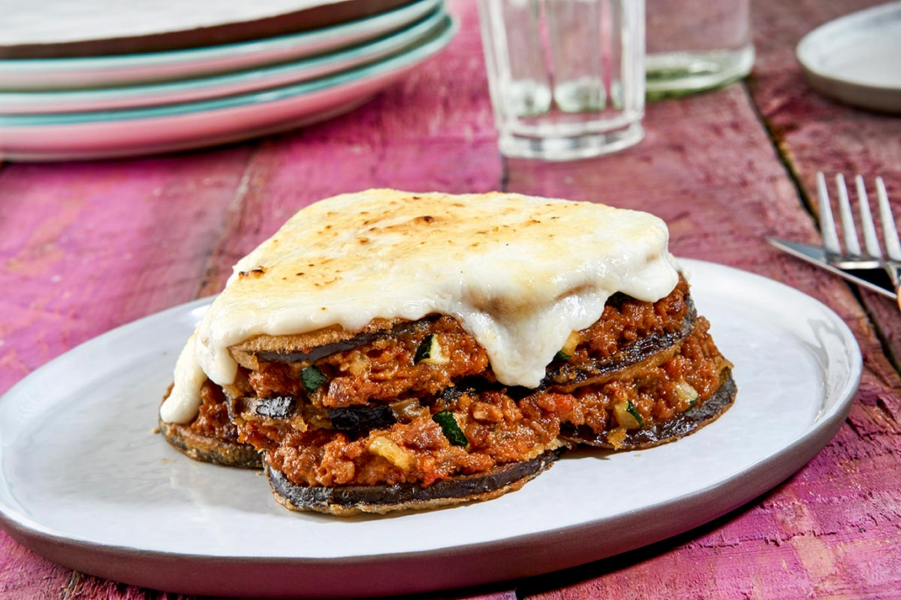

Esta es una selección de los mejores platos típicos de los paises que hemos escogido. Hemos seleccionado dos platos por país aunque se irán aumentando.
| País | Platos | Ingredientes |
|---|---|---|
| Tailandia | Pad Thai | Fideos de arroz, huevos, camarones o pollo, brotes de soja, cacahuetes, cebollino, ajo. |
| Tom Yum | Camarones, champiñones, agua o caldo. | |
| Grecia | Moussaka | Berenjenas, carne picada (cordero o ternera), cebolla, ajo, tomate triturado, vino tinto, harina, nuez moscada, queso rallado, huevos. |
| Souvlaki | Carne (cerdo, pollo o cordero), aceite de oliva, zumo de limón, ajo, orégano, sal, pimienta, pan de pita, tomate, cebolla, tzatziki (yogur, pepino, ajo, eneldo, aceite de oliva). |
Tailandia
 

Grecia
